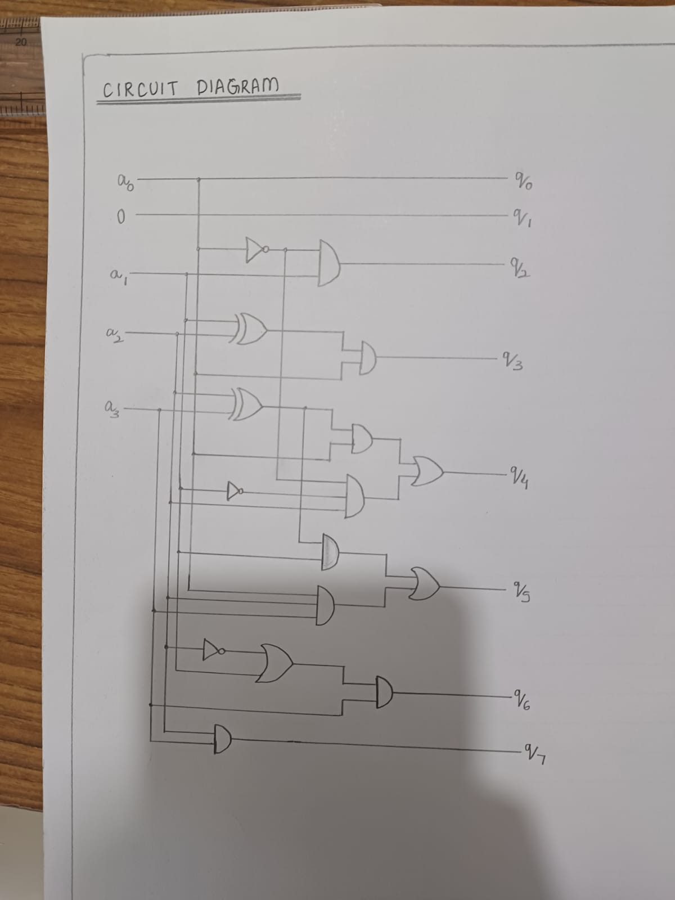

Crafting a Versatile Calculator: Our Experience
Creating a calculator capable of performing various operations like addition, subtraction, squaring, and square root computations was a fascinating project undertaken by my team and me. Our implementation involved fundamental digital logic components such as NAND, NOR, AND, OR, NOT, XOR, XNOR gates, registers, multiplexers (mux), and a comparator. Here's a detailed overview of our journey.
Setting the Objectives
Our primary objective was to develop a calculator that could handle basic arithmetic and more advanced operations like squaring and square roots. This required a systematic approach, where each function was built using fundamental logic gates and components.
Component Overview and Their Functionality
Logic Gates:
- NAND and NOR: Used as universal gates to create more complex logic functions.
- AND and OR: Basic gates for performing standard logical operations.
- NOT: Inverter gates used to complement inputs.
- XOR and XNOR: Gates for performing exclusive operations, essential in arithmetic logic units (ALUs).
Registers:
Employed for data storage, holding intermediate values during computations.
Multiplexer (MUX):
Used for selecting between different input signals, directing the appropriate data to the desired operational paths.
Comparator:
Integral for determining equality, greater than, or less than conditions, which was crucial for operations such as subtraction and square root calculations.
Design and Development Process
Schematic and Logic Design:
We began by drafting a detailed schematic that integrated our chosen components. This included creating truth tables and logic diagrams for each arithmetic operation.

Addition and Subtraction:
Using combinations of AND, OR, XOR, and NOR gates, we designed a full adder circuit for addition. For subtraction, we adapted the adder by incorporating NOT gates to handle 2's complement and used the comparator for verifying the results.
Squaring:
Implementing a squaring function involved replicating the multiplication process, leveraging AND gates and adders for bit-wise multiplication and summation.


Square Root:
The square root function required iterative approximation techniques, managed by a combination of comparators and sequential logic circuits.

Implementation Details
Integration of Registers and MUX:
Registers were pivotal in storing intermediate results. The MUX facilitated data selection, ensuring the correct operands were processed by the arithmetic units.
Control Logic:
We developed control logic circuits to manage the flow of data and operations, utilizing various logic gates to create control signals that synchronized with the main clock.
Testing and Debugging
We performed extensive testing on individual modules before integrating them. Each function was tested under multiple scenarios to ensure accuracy and reliability. Debugging involved tracing signal pathways and adjusting gate configurations to rectify any discrepancies.
Overcoming Challenges
One significant challenge was ensuring synchronization across all components, particularly with timing issues in the sequential logic circuits. We addressed this by fine-tuning the clock signals and introducing buffer registers to align data timing.
Final Integration and Verification
After thorough testing and debugging, we integrated all modules into a cohesive system. The final product was a robust calculator capable of handling various mathematical operations with precision.
Conclusion
The project was a rewarding experience, combining theoretical knowledge with practical implementation. The collaborative effort, coupled with problem-solving and innovative thinking, allowed us to achieve a functional and efficient calculator design.